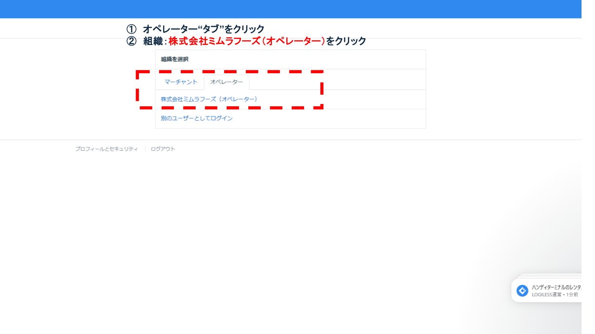
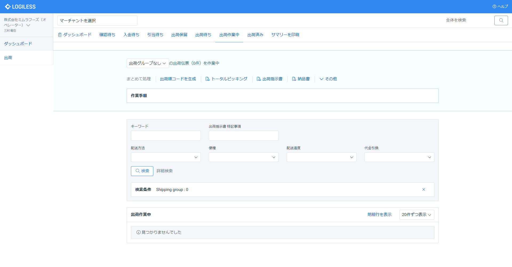
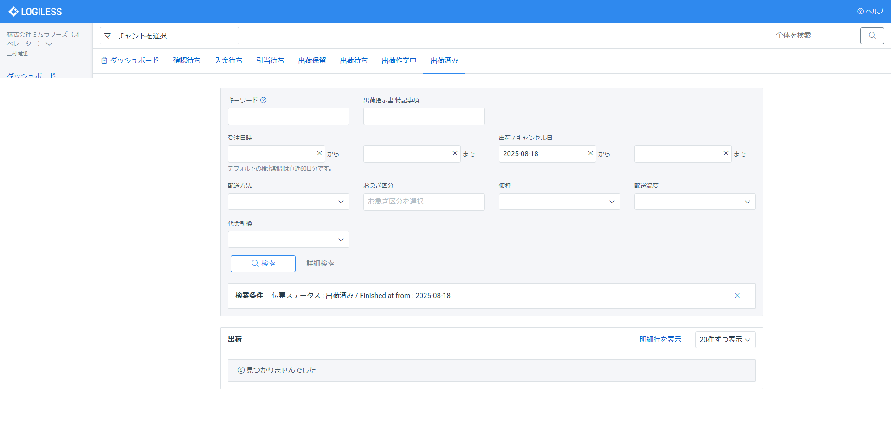

1. 使用ツールにログイン
ID・パスワードを使用してLOGIRESSにアクセスし、管理画面へログインします。

納品完了処理は、出荷された商品について最終的にシステム上で納品完了ステータスを反映する業務である。これにより顧客への納品が正式に完了として登録され、売上・請求業務に連動する。処理を実行しないと納品・売上・請求業務に影響するため必ず実施しなくてはならない工程である。
※ログイン情報は定期的に変更されるため、最新版はIT管理者に確認してください。外部公開時はマスキングまたは非表示。
| 項目 | 内容 |
|---|---|
| システム名 | LOGIRESS |
| ログインURL | https://app.logiless.com/ |
| ユーザーID | mimurafoods@googlegroups.com |
| パスワード | Mimura20250712 |
ID・パスワードを使用してLOGIRESSにアクセスし、管理画面へログインします。
ログイン後、画面上部の組織選択から「オペレーター」タブを選択し「株式会社ミムラフーズ（オペレーター）」を選択します。
左メインメニュー「出荷」を選択し、メイン画面の上部タブ「出荷作業中」を選びます。
作業を行う出荷グループ（yyyy/mm/dd）を選びます。

各出荷伝票の左側にあるチェックボックスにチェックを入れて、出荷を完了させたい出荷伝票を選択します。
表の上部にある「出荷作業を完了」をクリックし、「確定」を押します。

出荷＞上部タブ「出荷済み」をクリックし、出荷一覧に該当作業の出荷が存在しているか確認します。
| 作業項目 | R（実行） | A（責任） | C（相談） | I（共有） |
|---|---|---|---|---|
| 納品完了処理 | 出荷担当 | 商品管理責任者 | LOGILESSヘルプセンター | 受注・出荷指示担当 |